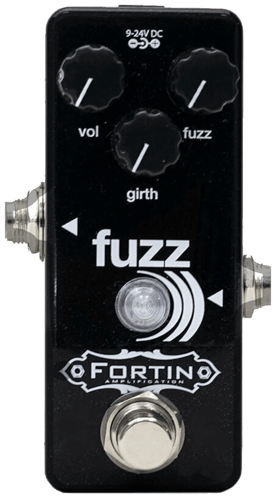
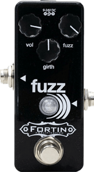
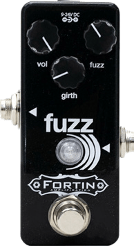
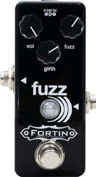

fuzz)))
The Fuzz)))
The Fuzz))) is our nod towards some of the greatest doom, grit, drone and sludge tones ever heard but at the same time, retaining its own, unique, unmistakable Fortin character.
It couldn’t be easier to use as the Fuzz))) only has three controls - Standard fuzz control, output volume and a girth control that adds a massive low end thickness to take your tone into, and beyond, previously uncharted sonic realms of destruction.
Sure to delight even the most fastidious tonal fuzz connoisseur, Fuzz))) brings legendary fuzz and distortion all wrapped up in one tiny package.
Getting the Best out of Your Pedal
To ensure you get the absolute best out of your new pedal, we strongly recommend you take some time just playing with it to get to know the controls and how they react. Yes, that is right, we want you to play with it as much as possible!
The fuzz is the ONLY pedal in the world to benefit from Fortin’s legendary Girth control, this isn’t a regular tone pot, this is the kind of control that takes the bass level of your fuzz and increases it so far your tone will be utterly destroyed in the way only an amazing fuzz pedal can.
Due to its size, you can only power the fuzz))) via the DC inlet, but it will take anything between 9-24vDC (center-pin negative). A clever MOSFET input trick protects the pedal if the wrong polarity supply is connected, so there is no way the magic tone smoke can be released if a wrong polarity power supply is used (the pedal will not power up). Modern discrete transistor based circuit for reliability and performance. This pedal sounds MONSTROUS on bass!
Controls
Bypass
True Bypass footswitch.
Level
Adjusts the output of the pedal. The higher you have this, the louder your signal will be and push the input of your amp harder.
Gain
The amount of fuzz that is applied to your signal.
Girth
Not a regular tone control - get that bass turned up, pre-gain, to allow you levels of awesome sounding fuzz that you’ve never heard before!
Power
9-24vDC center pin negative (fully regulated) external adapter/power supply or battery (not included). Power draw 4mA
Setting suggestions
These are only suggestions - find your own tone, as these may not apply to your guitar, your amp or your fingers - use them as a starting point...
Clean amp slaughter
Smash the life out of your clean amp, this is full fuzz.
Vintage Bright Fuzz
All the vintage fuzziness you could ever want from your clean amp. It’s bright, it’s fuzzy and it will cut through the band mix like you need it to...

Crunchy Fuzz Crunch
Your amp is already dirty, it’s got some chug and you want to mess it up? Make your crunch tones uber destructive...

Full filth
Taking the above one step further, your dirty amp is likely to need a day off after experiencing this epic bundle of abject tonal violence...

Warranty
For the full and up-to-date information about the Fortin warranty, please visit our website - www.fortinamps.com.
You can also email us at info@fortinamps.com.